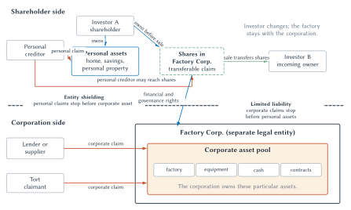

The Factory That Must Outlive Its Investors
A group of entrepreneurs wants to build a specialized factory. The project requires land, a production building, custom equipment, trained workers, long-term supply relationships, and years of product development. The assets will be far more valuable when used together than when sold separately.
The founders can supply the original idea and some capital, but not enough to build the plant. They need money from many investors. Those investors will not all remain for the life of the business. One may retire. Another may die. A third may need cash unexpectedly. Some will disagree with management. New investors may enter long after the factory begins operating.
This creates a problem that is easy to miss. How can investors change while the productive organization remains intact?
Suppose every investor directly owns a fraction of every machine, contract, bank account, and parcel of land. An investor who wants to leave might demand a corresponding part of the equipment. A personal creditor of that investor might try to seize a machine. Every transfer could require new deeds, assignments, signatures, and approvals. The factory’s legal identity and asset base would change whenever an investor entered, exited, died, or became insolvent.
The parties could try to solve these problems with contracts. They could promise not to withdraw assets, appoint managers, specify voting procedures, limit authority, and require consent before transfer. But the arrangement must bind changing investors, personal creditors, business creditors, workers, suppliers, customers, and courts. It must continue through events the founders cannot fully anticipate. A pile of bilateral promises may not create a stable organization at tolerable cost.
Corporate law supplies a different architecture. A separate legal entity can own the factory and enter contracts in its own name. Investors can own transferable shares in that entity rather than direct slices of its machines. The entity can continue while particular investors change. Decisionmaking can be delegated to a board and managers. Business creditors can look to an identifiable pool of corporate assets. Investors can ordinarily limit the personal wealth exposed to corporate debts.
These features sound familiar because corporations are common. Familiarity can hide how remarkable they are. The corporation is not a building, a group of managers, a ticker symbol, or merely a large business. It is a legal technology for organizing assets, claims, authority, liability, and continuity.
That technology solves some coordination problems while creating others. Managers may control resources owned by the corporation without bearing every consequence of their decisions. Controlling shareholders may exploit minority investors. Owners may receive gains while creditors or tort victims bear losses. Boards, voting, fiduciary duties, disclosure, compensation, debt, exit, and takeovers attempt to control these conflicts, but none works perfectly.
The economic question is therefore not whether corporations are good or bad. It is comparative:
- Which transactions should occur through markets, and which should be organized inside a firm?
- What does the corporate legal form add to the economic organization?
- Which costs does the corporate architecture reduce?
- Which agency and externality problems does it create?
- Which governance mechanisms perform well enough under real information and enforcement limits?
The answers begin by separating three concepts that ordinary conversation often collapses.
Markets, Firms, and Corporations
A market coordinates exchange among separate parties through prices and contracts. A factory can buy standard bolts from competing suppliers, hire a trucking company for a shipment, borrow from a bank, and sell finished goods to customers. Each exchange crosses an organizational boundary.
A firm is an economic organization that coordinates some productive activity internally. The factory may employ engineers, technicians, accountants, and salespeople under a continuing structure rather than negotiate a separate market contract for every task. Authority, routines, teams, budgets, and internal information help coordinate their work.
A corporation is a legal form. It supplies an entity that can own assets, contract, borrow, sue, be sued, issue transferable shares, and delegate management through legally recognized governance arrangements. The legal form can be used by a one-person consulting business or a multinational manufacturer.
The concepts overlap, but they are not synonyms. Not every firm is a corporation. A firm can be organized as a sole proprietorship, partnership, limited liability company, cooperative, or another form. Not every corporation corresponds neatly to one economic firm. A corporate group may place different divisions in separate subsidiaries, while a network of legally separate corporations may coordinate production so closely that economists analyze them as one enterprise for some purposes.
The founders of the specialized factory therefore face several distinct choices. They can purchase an activity through repeated market contracts or bring it inside through employment and internal authority. They can operate personally, share ownership through a partnership, use a limited liability company, or incorporate. Those legal forms differ in continuity, liability, management, transferability, and the treatment of committed assets. No form is universally best. The chapter focuses on the corporation because its architecture made especially durable and scalable enterprise possible.
Markets also exist inside and around corporations. A corporation buys inputs, hires labor, raises funds, licenses technology, and sells output. Internal divisions may even use transfer prices or compete for budgets. Incorporation does not replace exchange. It changes the legal framework within which exchange and organization occur.
| Layer | Main coordination method | Characteristic advantage | Characteristic cost or failure |
|---|---|---|---|
| Market | Prices and contracts among separate parties | Flexibility and strong individual incentives | Search, bargaining, specification, adaptation, and enforcement costs |
| Firm | Employment, internal authority, and organizational routines | Coordinated adaptation and team production | Administration, monitoring, influence, and agency costs |
| Corporation | Legal entity, separate asset pool, transferable shares, and delegated management | Continuity, durable investment, and scalable capital | Formal governance, agency conflicts, and possible risk shifting |
Table 12.1. Three layers of economic coordination. One enterprise can use all three layers. The table distinguishes the market-firm boundary from the choice of legal form.
Return to Factory Corp. It buys ordinary office supplies through market transactions. It employs production engineers inside the firm. It uses a corporation to hold the factory, raise capital, and structure authority. The three choices answer different questions.
The first major question is why the organization brings some transactions inside at all.
Why Put a Transaction Inside the Firm?
Comparative Coordination Costs
Ronald Coase asked a deceptively simple question: If markets coordinate resources through prices, why do firms exist?
Using a market is not free. A buyer must find potential sellers, compare offers, negotiate terms, specify performance, monitor quality, adapt when conditions change, and enforce the agreement. These are transaction costs. An organization can sometimes replace a series of separate negotiations with a continuing relationship and internal direction.
Factory Corp. does not need to bargain over a new contract every time the production manager asks an employee to move from one machine to another. The employment relationship defines a range of tasks and an authority structure. Internal records can transmit information that the parties would hesitate to disclose to an outside supplier. A common budget can make coordinated adaptation faster.
But internal organization is not free either. Managers can make mistakes. Employees may hide information or protect their departments. Approval chains can be slow. Internal prices may be weak. A division protected from competition may become complacent. As an organization grows, senior decisionmakers can become farther removed from local knowledge.
The make-or-buy decision therefore compares imperfect alternatives. Factory Corp. should not produce every input merely because market contracting is costly. It should not outsource every task merely because hierarchy is costly. The boundary belongs where the additional costs of market exchange and the additional costs of internal organization balance most favorably under the circumstances.
This is the same comparative-institutional method used throughout the book. The relevant choice is not market perfection versus organizational perfection. It is one real arrangement versus another.
Team Production and Monitoring
Some production occurs in teams. Suppose several technicians operate a continuous manufacturing process. Output depends on calibration, maintenance, timing, troubleshooting, and cooperation. When quality falls, it may be difficult to identify whose effort caused the problem. Each worker can receive the benefit of reduced effort while spreading the resulting loss across the entire team.
This is a monitoring problem. Armen Alchian and Harold Demsetz emphasized that team production can create demand for someone who observes inputs, coordinates work, and has a reason to monitor effectively. Connecting the monitor’s reward to the residual return can strengthen that incentive.
A residual financial claim is the claim to what remains after fixed or promised claims have been paid. If workers, lenders, suppliers, and tax authorities receive specified payments, the residual claimant receives what is left, which may be positive or negative. The prospect of that residual can motivate monitoring and adaptation.
Monitoring does not eliminate shirking or reveal every individual contribution. Monitors can also shirk, pursue private goals, or manipulate measures. The arrangement relocates an information problem and tries to improve incentives around it.
Asset Specificity and Vulnerability
Now suppose an outside supplier must build a production line designed only for Factory Corp.'s unusual component. Before investing, the supplier and factory may expect a profitable long-term relationship. After the line is built, much of its value depends on continued business with this particular buyer.
That is asset specificity. An investment is specific when it loses substantial value outside a particular relationship, location, use, or sequence. Specificity can create a bargaining vulnerability after costs are sunk. Factory Corp. may threaten to demand a lower price. The supplier may threaten to delay delivery at a critical moment. Anticipating this conflict, either side may invest too little in a relationship that could have created substantial joint value.
The parties have several possible responses. They can write a longer contract, use minimum-purchase commitments, post collateral, divide ownership, create adjustment procedures, rely on reputation, or integrate the activity within one firm. Integration may improve coordinated adaptation, but it also introduces administrative and agency costs. Asset specificity makes governance important; it does not mechanically prove that common ownership is best.
Incomplete Contracts and Residual Control
Imagine that Factory Corp. and the specialized supplier sign a detailed agreement. Two years later, a new production method makes it possible to use the supplier’s equipment either to improve Factory Corp.'s component or to serve a new customer. The original contract says nothing about this exact opportunity. Who decides?
Real contracts are incomplete. The parties cannot identify every future state, describe every required action, verify every fact to an outsider, and enforce every promise at reasonable cost. Some decisions will remain open.
Ownership matters in part because it allocates residual control rights: authority over uses and decisions the contract did not assign expressly. If Factory Corp. owns the equipment, it generally has greater ability to decide how the equipment will be used when the contract is silent, subject to law and any remaining agreements. If the supplier owns it, the supplier holds that residual authority.
The allocation changes investment incentives. Giving control to Factory Corp. may encourage it to develop production methods that increase the equipment’s value. The same allocation may weaken the supplier’s incentive to develop complementary knowledge if the supplier expects Factory Corp. to capture more of the gain. Ownership can strengthen one party’s bargaining position while weakening another’s.
Residual control rights should not be confused with a residual financial claim. One concerns decision authority when agreements are silent. The other concerns the financial return left after other claims are paid. They often interact, but they are not the same concept.
Coase, team production, asset specificity, and incomplete contracts are complementary lenses. One directs attention to market and administrative costs. Another emphasizes joint output and monitoring. Another identifies relationship-specific investment and opportunism. Another explains why ownership matters when future decisions cannot be fully contracted. No single lens determines every boundary.
They also do not yet explain the corporation. A partnership, cooperative, nonprofit, family business, or limited liability company can organize activity inside a firm. The next question is what corporate law adds.
What Corporate Law Adds
A Separate Legal Person
Factory Corp. can own land, equipment, cash, intellectual property, and contractual rights in its own name. It can borrow and promise repayment. It can hire employees and purchase insurance. It can bring a legal claim and can have a claim brought against it. Its existence can continue despite changes among shareholders, managers, and workers.
Delaware law supplies one concrete illustration, not a universal definition. Its corporation statute authorizes perpetual succession and permits a corporation to own property, make contracts, and sue or be sued in its own name. It ordinarily places management of the business and affairs under a board and treats shares as transferable personal property. Other jurisdictions and organizational forms implement these functions through different rules.
Calling the corporation a legal person does not claim that it is a human being. Legal personality is an organizational tool. It gives law a stable point to which assets, obligations, authority, and procedures can attach.
The standard corporate form is commonly described through five features:
- legal personality
- limited liability
- transferable shares
- delegated management under a board structure
- investor ownership
Exact implementation varies across jurisdictions and firms. Shares can have different voting and financial rights. Transfer can be restricted. Investors can contract for additional liability. Boards operate under statutes, charters, bylaws, contracts, and fiduciary standards. The five features identify a functional architecture, not an exceptionless definition.
Who Owns the Factory?
Ordinary speech says that shareholders own the corporation. That shorthand can mislead.
Factory Corp. owns the factory, machines, cash, and contracts. Its shareholders own shares. Those shares can carry voting rights, rights to declared distributions, rights associated with major transactions, and a residual financial interest. Shareholders have important governance and economic claims, but they do not each hold direct title to a proportional piece of every corporate asset.
If an investor owns 10 percent of Factory Corp.'s shares, the investor cannot ordinarily remove 10 percent of the machinery. If the investor sells those shares, the factory does not need to sign a new deed transferring 10 percent of its land. The shareholder changes; ownership of the factory remains with the corporation.
This distinction makes continuity possible. It also makes asset partitioning possible.
Two Asset Pools
Asset partitioning separates the assets associated with an organization from the personal assets of its owners. The separation works in two directions.
Limited liability protects shareholder personal assets from corporate claims, subject to important exceptions and qualifications. If Factory Corp. cannot pay a supplier, the supplier ordinarily claims against corporate assets rather than the shareholders’ houses and savings.
Entity shielding protects corporate assets from shareholder personal creditors. If one shareholder defaults on a personal loan, that creditor may reach the shareholder’s personal assets and shares. The creditor does not ordinarily seize a particular factory machine merely because the debtor owns shares in Factory Corp.

Figure 12.1. Asset partitioning, share transfer, and capital lock-in. Corporate creditors ordinarily claim against corporate assets, while a shareholder’s personal creditors ordinarily claim against the shareholder’s personal assets and may reach the shares. When the shares change hands, the factory remains owned by the corporation.
Read the figure from top to bottom. Investor A owns personal assets and shares in Factory Corp. A personal creditor can pursue the personal assets and may acquire or force a transfer of the shares. That changes who holds the investor claim. It does not transfer a particular corporate machine out of Factory Corp.
On the lower side, a lender, supplier, or tort claimant directs a corporate claim toward the corporate asset pool. If the claim exceeds that pool, limited liability may prevent recovery from shareholder personal assets. This is a benefit for investors and a potential cost for claimants.
The two protections are not identical. Limited liability protects owners from business creditors. Entity shielding protects the business asset pool from owners’ creditors. Confusing them makes it difficult to see what organizational law contributes.
Why Contract Alone Is Not Enough
The founders might try to reproduce entity shielding by contract. Every investor could promise every corporate creditor that personal creditors will not reach corporate assets. Each investor might also negotiate with every personal creditor. The promises would have to remain effective as shares and debts changed hands.
The practical problem is that the arrangement changes the rights of third parties who are not all present at the same bargaining table. A new personal creditor might never have agreed to subordinate its claim. A new shareholder might have a different set of creditors. A business creditor wants stable priority in the entity’s assets despite these changes.
Organizational law supplies that stable pattern through law rather than requiring a new web of promises after every transfer. This is why the corporation is more than a standardized contract. It creates property-like relations among the entity, investors, and multiple classes of creditors.
Capital Lock-In and Transferable Shares
Long-lived production becomes difficult if every investor can withdraw contributed assets at will. The corporation separates investor exit from asset withdrawal. A shareholder who wants to leave ordinarily sells shares to another investor rather than taking a piece of the operating business.
This is capital lock-in. The term does not mean corporate assets can never move. A corporation can distribute cash, sell equipment, pledge collateral, merge, reorganize, enter bankruptcy, or dissolve under applicable rules. It means an individual shareholder ordinarily cannot force the return of a proportional share of productive assets simply by choosing to exit.
Transferable shares make this commitment less burdensome. Investors can obtain liquidity by selling their claims while the entity retains the productive assets. Transferability also lets ownership change without renegotiating every contract held by the corporation.
Capital lock-in can support firm-specific investment and long planning horizons. It can also trap value under poor management. Corporate law therefore combines continuity with governance mechanisms that let investors vote, sell, litigate, or support a change in control. Stability and accountability must be designed together.
Delegated Management
Large numbers of shareholders cannot manage every production decision. The corporate form ordinarily delegates direction to a board, which appoints or oversees managers. Shareholders select directors through voting arrangements and may have rights over specified fundamental changes, but they do not vote on every purchase, hire, price, or product design.
Delegation economizes on collective decision costs. It allows informed managers to act quickly and coordinate specialized information. It also separates those who supply much of the risk capital from those who exercise daily control. That separation creates the central governance problem developed later in the chapter.
Limited Liability and Risk Shifting
Limited liability is often treated as the corporation’s defining feature. It is important, but its effects are not one-sided.
Why Investors Value Limited Liability
Suppose an investor can place savings in small ownership interests across twenty corporations. Without limited liability, the investor might need to investigate every corporation’s operations and every other shareholder’s wealth because a single catastrophic loss could reach the investor’s home, retirement savings, and future income.
Limited liability makes the maximum direct exposure more predictable. The value of the shares can fall to zero, but ordinary corporate debts do not automatically become unlimited personal debts of the shareholder. This supports passive investment and diversification.
Diversification matters because investors differ from entrepreneurs and workers. Factory Corp.'s founders may concentrate their wealth, time, and knowledge in the business. An outside investor can spread risk across many enterprises. Transferable shares and limited liability make that strategy easier, which can lower the cost of raising capital for productive projects.
Limited liability can also reduce monitoring costs among shareholders. An investor does not need to investigate whether another shareholder is wealthy enough to pay a future corporate judgment. Share prices can reflect the expected value of the corporate claim without depending directly on the identity and personal balance sheet of every co-owner.
These benefits help explain why limited liability complements transferable shares. If a share transfer could expose every remaining shareholder to the unknown personal risk tolerance and wealth of the new holder, a liquid market in shares would be harder to sustain.
Voluntary Creditors Can Sometimes Adjust
A bank or sophisticated supplier can respond to limited liability before extending credit. It can charge a higher interest rate, require collateral, restrict dividends, demand financial reporting, purchase insurance, shorten the contract, or obtain a personal guarantee from an owner.
These protections are not free. Information may be incomplete. Bargaining power may differ. Covenants require monitoring and enforcement. Collateral can reduce the firm’s flexibility. A small supplier may accept standard terms because it needs the customer. Even voluntary creditors cannot perfectly price every risk.
The important point is comparative. Some creditors know they are dealing with a limited-liability entity and can negotiate at least part of the risk into the exchange.
Involuntary Claimants Cannot Bargain First
Now suppose Factory Corp.'s hazardous process releases a chemical that injures nearby residents. Those residents did not choose to lend to the company. They did not negotiate an interest rate, inspect its insurance, demand collateral, or write a covenant before exposure.
If expected liability exceeds corporate assets and insurance, shareholders may receive the gains from a risky activity while part of the expected loss falls on victims. This is a judgment-proof problem of the kind introduced in Chapter 7. Formal liability can create weak deterrence when the responsible entity cannot pay the harm it causes.
The problem can affect activity as well as precaution. Owners of a thinly capitalized corporation may choose a hazardous scale of operation because their downside is bounded while the upside remains available through share value and distributions. Even if managers take every legally required observable precaution, the enterprise may undertake too much risk-producing activity.
Possible responses include insurance requirements, minimum capitalization, bonding, safety regulation, guarantees, restrictions on distributions, liability for particular responsible actors, and carefully defined exceptions to limited liability. Each has costs. Capital rules can be crude. Insurance can create moral hazard or exclude difficult risks. Broad personal liability can discourage useful investment and make diversification harder. Regulation can be captured, rigid, or poorly enforced.
The goal is not to recite every legal response. It is to recognize that limited liability changes incentives and the allocation of loss. Whether the benefits exceed the costs depends on the type of creditor, the observability of risk, the firm’s assets and insurance, and the performance of complementary institutions.
Delegation and the Three Agency Problems
Factory Corp. now has hundreds of investors. Those investors cannot jointly approve daily production schedules, negotiate supplier changes, evaluate every engineer, or respond to every market shock. They delegate authority to a board and managers.
Delegation creates value because specialized decisionmakers can act on information without assembling all investors. It creates a problem because the decisionmaker may not bear all the gains and losses produced by the decision.
Agency costs include more than money stolen or wasted. They include resources spent monitoring decisionmakers, resources agents spend assuring others that they will behave, and the residual loss that remains when incentives are still imperfect. Some governance cost is the price of obtaining the benefits of delegation.
Corporate agency is not one conflict. At least three relationships recur.
Managers and Shareholders
Managers may value salary, leisure, job security, status, staff, private benefits, or control over a larger organization. Shareholders generally value the financial and governance rights attached to their shares. The interests overlap because a successful corporation can benefit both groups, but they are not identical.
A manager might avoid a valuable risky project to protect a secure position. Another might pursue growth for prestige even when expansion costs more than it adds. A compensation plan might reward short-term revenue while ignoring long-term product risk. None of these possibilities proves misconduct. They identify margins along which delegated control and investor interests can diverge.
Controlling and Minority Shareholders
Concentrated ownership can improve monitoring. A family or blockholder with a large stake has more reason to study management and enough votes to intervene. But control also creates opportunities to shift value from minority investors.
A controlling shareholder might cause the corporation to buy services from another controlled company at an inflated price, approve unequal transactions, direct opportunities elsewhere, or preserve control at the expense of share value. Minority shareholders bear part of the loss but may lack the votes or information to prevent it.
This is an institutional tradeoff. Dispersed ownership can weaken monitoring of managers. Concentrated ownership can strengthen monitoring while intensifying conflict between controlling and minority owners. There is no ownership concentration that eliminates every agency problem.
Shareholders, Creditors, and Third Parties
Shareholders hold a residual financial interest. If a project succeeds, share value can rise substantially. If it fails, limited liability may cap the loss at the investment. Creditors often receive fixed promised payments. This difference can produce conflict after debt is issued.
Shareholders may favor a very risky project because they receive much of the upside while creditors bear part of the downside through a greater probability of default. The firm might borrow more, substitute riskier assets, distribute cash, underinsure, or resist safety spending. Employees, customers, and tort victims can face related risks, although their claims and bargaining positions differ from those of lenders.
| Conflict | Characteristic risk | Illustrative conduct | Principal responses |
|---|---|---|---|
| Managers versus shareholders | Managers do not bear all gains and losses from their decisions | Low effort, private benefits, empire building, distorted pay or risk choices | Board oversight, incentives, disclosure, voting, exit, takeovers, fiduciary duties |
| Controlling versus minority shareholders | A controller can redirect value on terms minorities cannot match | Self-dealing, unequal transactions, diversion of opportunities | Independent review, voting rules, disclosure, approval procedures, fiduciary duties |
| Shareholders versus creditors and third parties | Owners receive upside while part of the downside can fall elsewhere | Excess leverage, asset substitution, distributions, underinsurance, tort risk | Covenants, collateral, insurance, capital rules, regulation, liability rules |
Table 12.2. Three recurring corporate agency conflicts. A governance arrangement that reduces one conflict can worsen another. The responses constrain rather than eliminate agency costs.
The table also shows why saying “shareholder control” is not a complete solution. More shareholder power may discipline managers while increasing the ability of a controlling shareholder to exploit minority investors or shift risk to creditors. Governance must be evaluated as a system.
Governance as a Portfolio
No single governance mechanism can observe every action, align every interest, and correct every error. Corporate governance therefore operates as a portfolio of partial controls.
Boards and Appointment Rights
A board creates a smaller decision body between dispersed investors and operating managers. Directors can appoint executives, approve major strategies, monitor performance, ask for information, and replace managers.
Boards economize on the cost of having thousands of shareholders make decisions. Their effectiveness depends on information, incentives, time, expertise, and independence. Directors often rely on information produced by the managers they monitor. A board close enough to understand the business can become too close to challenge it. A board far removed from management can lack the knowledge needed to evaluate complex choices.
Voting and Voice
Voting gives shareholders a method for selecting directors and deciding specified fundamental matters. Voice can make management and boards responsive to investors. It can also reveal disagreement and support collective action.
But voting is costly. A small shareholder captures little of the gain from becoming informed while bearing the full cost of research. Many rationally remain passive. Institutional investors may have stronger incentives but also face conflicts of their own. Controllers may dominate the outcome. Rules about information, nomination, voting power, and approval therefore shape the practical value of formal voice.
Fiduciary Duties and Open-Ended Standards
Corporate participants cannot specify every future conflict in advance. A contract cannot list every form of self-dealing, information misuse, divided loyalty, reckless process, or unexpected opportunity that may arise over decades.
Fiduciary duties respond with open-ended legal standards. At a principles level, the duty of loyalty addresses conflicts such as self-dealing and appropriation of corporate opportunities. The duty of care addresses attention and decision process. Exact doctrine, remedies, and procedural rules vary, but the economic function is clear: fiduciary standards govern conduct too varied and difficult to describe completely in advance.
Open-ended standards create their own risk. Judges evaluate decisions after outcomes are known. A failed project can look obviously foolish in hindsight even when the decision was reasonable based on information available at the time. Aggressive judicial second-guessing can make directors excessively cautious and replace delegated business judgment with litigation-driven decisionmaking.
Business-judgment deference responds to that concern. In broad terms, courts often avoid substituting their own business decision for a sufficiently informed, disinterested, good-faith board decision. The principle protects delegated authority and reduces hindsight error. It is not a general immunity for disloyalty, bad faith, or every defective process.
Fiduciary duty and deference therefore work together. One supplies a flexible standard where contracts are incomplete. The other limits the danger that a flexible standard will make judges the routine managers of corporations.
Information and Disclosure
Monitoring requires information. Accounting, audits, internal controls, public disclosure, analyst research, and creditor reporting can make performance and conflicts easier to observe. Better information can improve pricing, voting, contracting, and board oversight.
Disclosure is not the same as understanding. Reports can be complex, delayed, strategically framed, or focused on what is measurable. More pages can obscure rather than clarify. Useful disclosure must balance comparability, relevance, cost, verification, and the risk that sensitive information will harm the enterprise or overwhelm users.
Incentive Compensation and Ownership
Compensation can link managerial reward to corporate outcomes. Shares and options can make managers benefit when investors benefit. Bonuses can focus attention on selected goals. Promotion and reputation can reward long-term performance.
Every metric is incomplete. Rewarding reported earnings may encourage manipulation or deferred investment. Rewarding stock price may encourage short horizons or excessive risk. Rewarding growth may encourage empire building. Options can amplify upside without imposing an equal downside. A good incentive contract must consider what is measured, what is omitted, how easily the measure can be manipulated, and which risks the manager can actually control.
Debt, Covenants, and Creditor Monitoring
Debt can discipline managers by requiring regular payments and external review. Creditors can demand reports, collateral, limits on additional borrowing, or restrictions on distributions. These covenants respond directly to the shareholder-creditor conflict.
Debt also creates costs. Fixed obligations can make useful adaptation harder, intensify distress, and encourage risk shifting when the corporation approaches default. Creditor protection can preserve value while also constraining projects that would benefit the enterprise as a whole.
Exit and the Market for Corporate Control
Transferable shares let an investor exit without withdrawing corporate assets. Exit reallocates capital and can lower the share price when investors expect poor performance. Falling prices can affect compensation, financing, reputation, and vulnerability to a change in control.
Henry Manne emphasized the market for corporate control. If assets are worth more under different management, an acquirer may buy enough shares to replace control and capture part of the improvement. The possibility can discipline managers even before a bid occurs.
Takeovers are not a perfect corrective mechanism. Acquirers can be mistaken, self-interested, or overconfident. Transactions are costly. Managers may resist efficient bids or defend the corporation against opportunistic ones. A bid can redistribute value among shareholders, employees, creditors, and managers. The mechanism belongs in the governance portfolio, not above it.
Product, Labor, and Reputation Markets
Governance does not occur only through corporate law. Poorly managed firms can lose customers, workers, suppliers, financing, and managerial reputation. Competition can reveal errors and reward better organizations.
These pressures may be weak when a corporation has market power, information is slow, switching is costly, or failure occurs only after large losses. Product-market discipline can punish a bad strategy without identifying which manager caused it. Labor markets can reward visible performance while missing quiet long-term value. Market discipline is useful but noisy.
| Function | Illustrative mechanisms | Main strength | Main limitation |
|---|---|---|---|
| Monitoring | Board oversight, audits, creditor monitoring | Detects or deters poor decisions and self-dealing | Monitors can lack information, independence, or effort |
| Voice | Voting, appointment rights, shareholder proposals | Lets affected investors influence decisionmakers | Collective action and unequal control weaken participation |
| Standards | Fiduciary duties and judicial review | Reaches conduct too varied to specify in advance | Litigation is costly and hindsight can distort review |
| Information | Disclosure, accounting, independent analysis | Improves pricing, monitoring, and comparison | Information can be complex, delayed, or strategically presented |
| Incentives | Compensation, ownership stakes, promotion, debt covenants | Aligns payoffs with selected outcomes | Measured targets can be incomplete or manipulated |
| Exit | Transferable shares and redemption where available | Lets investors reallocate capital without dismantling the firm | Exit may discipline price more than internal conduct |
| Market discipline | Takeovers, product markets, labor markets, reputation | Outside alternatives can punish persistent underperformance | Discipline may be noisy, delayed, costly, or blocked |
Table 12.3. Governance as a portfolio. The mechanisms can complement or substitute for one another. Each improves some margins while creating information, incentive, enforcement, or error costs of its own.
The portfolio perspective changes the question. Instead of asking whether boards work or takeovers work, ask how a particular combination performs against the relevant conflict. A closely held family corporation faces different monitoring and minority-protection problems from a widely held public corporation. A highly leveraged hazardous enterprise raises different creditor and tort concerns from a well-capitalized professional-services firm.
Good governance is not the maximum amount of every mechanism. More monitoring can slow decisions. More disclosure can bury important information. Stronger pay incentives can encourage manipulation. More creditor control can block adaptation. Easier takeovers can discipline managers while shortening planning horizons or inviting opportunistic bids. The economic task is to design a portfolio whose marginal benefits exceed its marginal costs.
Berle and Means, Then Stigler and Friedland
Adolf Berle and Gardiner Means made the separation of ownership and control central to the study of the modern corporation. In a large public company, thousands of shareholders might supply capital while professional managers exercise practical control. Each small shareholder has weak incentives to monitor, and collective action is difficult.
The mechanism is plausible. If managers face weak owner control, they may pay themselves more, pursue growth or security instead of profitability, consume private benefits, or avoid difficult changes. The argument became a foundational account of corporate governance.
But a plausible mechanism is not an estimate of its magnitude.
George Stigler and Claire Friedland later asked what the period evidence could establish. If management-controlled firms gave executives greater freedom at shareholders’ expense, compensation or profitability might differ systematically across firms classified by control type.
Their results did not provide the simple confirmation the famous narrative might suggest. They found no systematic compensation relationship across three salary data sets. In profitability tests, the control-type coefficient was statistically significant in only one of five regressions.
The evidence does not prove that agency costs were zero. The control categories were crude. Compensation and profitability do not measure every managerial objective. The data came from a particular historical period. Boards, debt, reputation, product markets, shareholder exit, and takeover threats may have constrained managers. Firms may also have chosen dispersed ownership when diversification and financing gains were especially valuable.
Selection matters. Suppose the corporate form and dispersed ownership create both a financing benefit and an agency cost. Firms will be more likely to adopt the arrangement when the expected financing benefit exceeds the expected governance cost. Observing no large performance gap after that choice does not establish that agency problems are imaginary. It may show that governance constrained them, that markets priced them, or that firms selected the form where its net benefit was positive.
The episode is a broader lesson in law and economics. A compelling story can identify a mechanism and generate a prediction. The next step is to ask what evidence could distinguish that prediction from alternatives. Institutional analysis becomes stronger when theory and evidence discipline each other.
Returning to Factory Corp.
Factory Corp. began with a problem of continuity. It needed a productive organization that could survive changes among investors. By the end of the chapter, the corporation has solved much more than that single problem.
The firm boundary allows some activities to be coordinated internally when repeated market contracting, team production, relationship-specific investment, or adaptation makes hierarchy attractive. Corporate personality gives the organization a stable legal identity. Entity shielding creates a durable asset pool for business creditors. Capital lock-in keeps the factory together when an investor leaves. Transferable shares permit the investor claim to move without transferring each underlying asset. Limited liability makes diversified and passive investment easier. Delegated management allows specialized decisionmakers to act without obtaining consent from every investor.
These gains come with costs. Internal organization can become bureaucratic. Incomplete contracts leave control in the hands of people whose incentives differ. Managers may not maximize investor value. Controllers may exploit minority shareholders. Limited liability can shift loss to creditors and tort victims. Stability can preserve a bad strategy. Scale can produce political influence or market power.
The governance portfolio responds through boards, voting, fiduciary duties, disclosure, incentive pay, debt, exit, takeovers, competition, and reputation. These mechanisms make the corporation workable, but they do not make it self-correcting.
This conclusion bridges to the next chapters. Chapter 13 asks when private governance is insufficient and how regulation performs under its own information and incentive constraints. Chapter 14 distinguishes productive scale and integration from monopoly, exclusion, and durable market power. Chapter 15 asks whether platforms, code, smart contracts, and AI agents reproduce corporate functions or create new arrangements for authority and responsibility.
The traditional corporation must come first. A token, algorithm, or digital voting mechanism can automate specified decisions. It does not automatically create legal personality, an asset pool, creditor priority, judgment under incomplete conditions, or legitimate public enforcement. Understanding the corporation gives students a benchmark for evaluating claims that technology can replace organization or law.
Big Picture
The corporation is a coordination technology built from law.
It separates an enterprise’s assets from the personal assets of changing investors. It lets the entity own property and make contracts. It keeps productive assets together while shares move. It supports delegated management and large-scale finance. It allows a firm to survive its founders.
The same architecture produces governance problems. Decisionmakers may not bear every consequence of their choices. Controlling owners can discipline managers or exploit minority investors. Limited liability can encourage investment or shift losses to people who never agreed to bear them. Governance mechanisms reduce these costs imperfectly and at a price.
The central law-and-economics lesson is comparative. Markets, firms, corporations, courts, creditors, regulators, and competitive pressures each coordinate information and incentives differently. The corporation is valuable not because it eliminates transaction costs, but because it reorganizes them in a way that can make durable, specialized, large-scale production possible.
Chapter Study Map
- Core ideas: market, firm, corporation, comparative coordination cost, team production, monitoring, asset specificity, incomplete contracts, residual control rights, residual financial claims, legal personality, investor ownership, asset partitioning, entity shielding, limited liability, capital lock-in, transferable shares, delegated management, agency costs, fiduciary duties, business-judgment deference, and market for corporate control.
- Figure: use Figure 12.1 to identify who owns each asset, trace personal and corporate claims, distinguish entity shielding from limited liability, and explain why a share transfer does not remove the factory from the entity.
- Tables: use Table 12.1 to distinguish markets, firms, and corporations; Table 12.2 to diagnose the three agency conflicts; and Table 12.3 to design and criticize a governance portfolio.
- Reasoning tasks: compare make-or-buy arrangements, identify team-production and asset-specificity problems, locate residual control, distinguish ownership of shares from ownership of corporate assets, trace risk shifting, and match governance mechanisms to conflicts.
- Common mistakes: treating every firm as a corporation, treating shareholders as direct owners of each corporate asset, confusing entity shielding with limited liability, treating residual control and residual financial claims as identical, assuming asset specificity always requires integration, assuming separation of ownership and control proves poor performance, or assuming one governance mechanism eliminates agency costs.
- Required applications: specialized factory, standard versus specialized inputs, team production, unforeseen equipment use, personal and corporate creditors, shareholder exit, hazardous enterprise, widely held corporation, family-controlled corporation, fiduciary standards, incentive pay, debt covenants, and takeover discipline.
- Optional enrichment: detailed business-form comparison, corporate-finance models, modern ownership-concentration evidence, takeover doctrine, bankruptcy priority, corporate-purpose debates, and formal incomplete-contract models.
Review Questions
- Distinguish a market, a firm, and a corporation.
- Why can one enterprise use all three coordination layers at once?
- What question did Coase ask in “The Nature of the Firm”?
- List five costs of using market exchange.
- Why does internal organization not eliminate coordination costs?
- Define team production.
- Why can team production create a monitoring problem?
- Define a residual financial claim.
- Define asset specificity and give an example.
- Why can a specific investment create bargaining vulnerability after investment?
- Define an incomplete contract.
- What are residual control rights?
- Distinguish residual control rights from a residual financial claim.
- Why does ownership affect investment incentives when contracts are incomplete?
- Identify the five common features of the standard corporation.
- What does legal personality accomplish?
- Why is saying “shareholders own the corporation” potentially misleading?
- What do shareholders own, and what does the corporation own?
- Define asset partitioning.
- Define entity shielding.
- Define limited liability.
- Explain why entity shielding and limited liability operate in opposite directions.
- Why is entity shielding difficult to reproduce through ordinary contracts alone?
- Define capital lock-in.
- How do transferable shares make capital lock-in less burdensome for investors?
- Why does a board structure reduce collective decision costs?
- Define agency costs.
- Identify the three recurring corporate agency conflicts.
- How can concentrated ownership reduce one agency problem while worsening another?
- Why can shareholders and creditors prefer different levels of project risk?
- How can limited liability support diversification and passive investment?
- Why do voluntary and involuntary creditors present different risk-shifting problems?
- What economic function do fiduciary duties perform under incomplete contracting?
- What problem does business-judgment deference attempt to reduce?
- Why is incentive compensation necessarily incomplete?
- How can debt covenants constrain shareholder-creditor conflict?
- How can transferable shares discipline management without changing corporate asset ownership?
- What is the market for corporate control?
- What did Berle and Means predict about dispersed ownership and managerial control?
- What did Stigler and Friedland’s evidence show, and what did it not prove?
Economic Reasoning Questions
- A manufacturer buys standard screws under short-term contracts but makes a patented sensor internally. Identify facts that could justify the different boundaries. Do not assume the current arrangement is efficient.
- Four technicians jointly operate a production line. Output is observable, but individual effort is not. Explain the team-production problem and propose two monitoring arrangements. What new agency problem does each create?
- A supplier must spend $2 million on equipment worth only $300,000 outside one buyer relationship. Explain the asset-specificity problem. Compare a long-term contract, buyer ownership, supplier ownership, and joint ownership.
- A contract assigns every anticipated use of a machine but says nothing about a new product invented five years later. Explain how ownership affects residual control and investment incentives.
- Investor A owns 20 percent of Factory Corp. and defaults on a personal loan. Use Figure 12.1 to identify what the personal creditor may pursue and what ordinarily remains with the corporation.
- Factory Corp. cannot pay a supplier. Use Figure 12.1 to distinguish the supplier’s claim from a claim against the shareholders’ personal assets. Which facts could alter the simplified result?
- A shareholder wants to leave Factory Corp. Compare withdrawal of 15 percent of the machines with sale of the shares. Explain the role of capital lock-in and transferability.
- A bank lends voluntarily to a hazardous corporation, while nearby residents face accident risk. Compare the protections each group can arrange before a loss.
- A controlling family improves monitoring but causes the corporation to purchase services from another family company. Identify the agency problems reduced and created. Design a governance response.
- Managers can choose a stable project worth $100 million or a risky project that benefits shareholders if successful but makes default more likely. Explain why shareholders, managers, and creditors may rank the projects differently.
- A compensation plan rewards quarterly sales. Managers increase sales by offering poor-quality credit and delaying maintenance. Diagnose the measurement problem and redesign the incentive portfolio.
- A court reviews a failed acquisition after a severe recession. Explain hindsight bias and the economic case for business-judgment deference. What facts would strengthen the case for judicial intervention?
- A corporation has an independent board, extensive disclosure, and performance pay but no large shareholder. Explain why agency costs can remain. Then identify costs created by adding a controlling shareholder.
- An acquiring company offers to buy Factory Corp. and replace its managers. Give one efficiency explanation and one alternative explanation for the bid. What evidence would distinguish them?
- Suppose management-controlled firms and owner-controlled firms have equal measured profitability. Give four explanations consistent with positive agency costs.
- Compare a corporation with a web of contracts that attempts to reproduce legal personality, entity shielding, transferable investor claims, and continuity. Which relations can contract reproduce most easily, and which require legal support involving third parties?
- Design a governance portfolio for a closely held hazardous-waste processor. Address managers, controlling owners, minority investors, lenders, workers, and involuntary claimants.
- A technology entrepreneur claims that software voting and automatic payments make corporate law obsolete. Use the chapter’s framework to identify which corporate functions the software may reproduce and which remain unresolved.
Law and Economics Lab
The Corporate-Architecture and Governance Audit
Choose or construct an enterprise that requires durable assets, several participants, and outside financing. It may be a manufacturer, restaurant group, biotechnology laboratory, logistics company, energy project, software service, or another enterprise approved by your instructor.
- Define the enterprise. Identify its product, long-lived assets, workers, suppliers, investors, creditors, customers, and people exposed to accidental harm.
- Map the transactions. Identify which activities occur through markets and which occur inside the firm. Do not assume the current boundary is efficient.
- Compare coordination costs. For at least three important transactions, identify search, bargaining, specification, adaptation, monitoring, enforcement, administration, and error costs.
- Separate the mechanisms. Identify any team-production, asset-specificity, and incomplete-contract problems. Explain why the labels are not interchangeable.
- Locate residual control. Choose one important asset and describe an unforeseen decision that the parties’ agreement does not resolve. Identify who controls the asset and how that allocation affects investment incentives.
- Select a legal architecture. Explain which features of a partnership, LLC, corporation, cooperative, or another form address the enterprise’s actual coordination problems. Verify jurisdiction-specific legal claims before relying on them.
- Map the asset pools. Create a diagram showing entity assets, investor personal assets, shares or membership interests, business creditors, personal creditors, and involuntary claimants.
- Trace entry and exit. Explain how an investor enters, exits, dies, or becomes insolvent. State what happens to the enterprise’s productive assets in each event.
- Diagnose agency conflicts. Analyze managers versus investors, controlling versus minority owners, and owners versus creditors or third parties. Give one concrete behavioral margin for each.
- Design a governance portfolio. Use monitoring, voice, standards, information, incentives, exit, and market discipline. For every mechanism, identify its main cost, information requirement, and likely failure.
- Run an AI audit. Give an AI system the frozen enterprise facts and ask it to propose a legal form and governance structure. Require it to distinguish contract terms from legal-entity features and to identify affected parties.
- Challenge the output. Check whether the AI invented legal rules, treated shareholders as owners of particular corporate assets, confused limited liability with entity shielding, ignored involuntary claimants, or assumed that fiduciary duty eliminates agency costs.
- Compare the strongest alternative. Evaluate the AI proposal against a realistic alternative architecture. State which arrangement performs better under the facts and which missing evidence would reverse the conclusion.
- Verify the law. Confirm every current legal claim through an official statute, court, regulator, or other authoritative source. Label invented numerical assumptions and distinguish them from evidence.
Conclude with a one-page institutional diagnosis. Identify the coordination problem the chosen architecture solves best, the largest agency or externality cost it leaves behind, and the governance mechanism most likely to fail. The purpose is not to discover a universally best legal form. It is to connect legal architecture to the specific transactions, information, incentives, and enforcement problems of an enterprise.